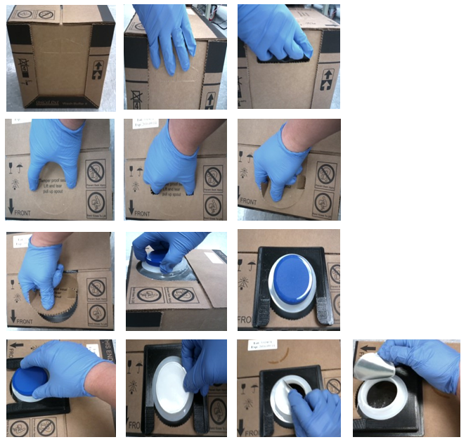
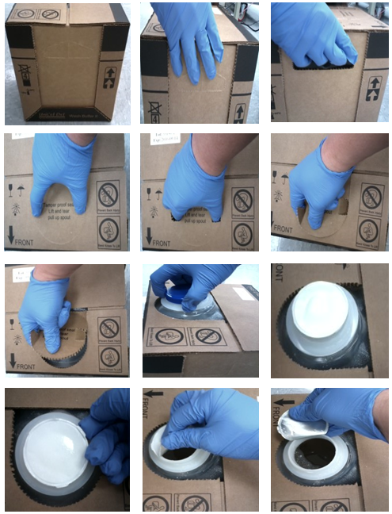

Replacing Wash Buffer Container
This procedure describes how to replace a container of wash buffer.


-
Prepare a full wash buffer container for loading.
Caution: To avoid puncturing the wash buffer bottle, do not use any sharp objects to prepare the wash buffer container for loading.
- Locate the serrated handle holes on two sides of the container, and then press inward on them.
-
Locate the circular, serrated cardboard area on the top of the container, place your finger and thumb on the two tabs and push downward, and then from one of the two holes separate the circular cardboard area from the container.
To remove the circular cardboard area completely, break the remaining serrations by pulling the area upward and away from the container.
-
Remove the empty wash buffer container.
Caution: Handle the Cap/Tube Assembly with care to avoid buffer contamination.New Wash Buffer Supply Drawer with Pressure Sensors.
- Open the bulk fluid supply drawer.
- Remove the Cap/tube Assembly on the depleted container and set it aside near the drawer.
Note: Gently cover the Cap/Tube Assembly with a clean absorbent pad or paper towel.
- Remove the Shim Assembly from the depleted container's neck and set it aside near the drawer.
- Lift the depleted container from the drawer and set it aside near the drawer.
Old Wash Buffer Supply Drawer with Weight Sensors.- Open the bulk fluid supply drawer.
- Disconnect the quick-release fitting from the cap and tube assembly on the depleted container.
- Lift the depleted container from the drawer and set it aside near the drawer.
-
Install the replacement wash buffer container.
Caution: Handle the Cap/Tube Assembly with care to avoid buffer contamination.New Wash Buffer Supply Drawer with Pressure Sensors.
- Grasp the full container by the handle holes and gently lower it into position in the drawer.
- Pull upward on the bottle cap until the neck of the container is lifted up through the hole in the cardboard.
- Insert the Shim Assembly to the container's neck.
Note: Ensure the shim is properly inserted to keep the container's neck steady.
- Remove the bottle cap.
- Locate the seal tab of the bottle plastic seal.
- Pull upward on the seal tab with your index finger and thumb to remove the seal from the container.
- Discard the seal and cardboard cutout.
- Inspect the Cap/Tube Assembly to verify that there are no broken or kinking tubes and damage tubes or cap.
- Place the Cap/Tube Assembly into the container and tighten the cap.
- Close the drawer.
Note: The instrument detects automatically that the buffer container has been replaced. It is not necessary to take any other actions after closing the drawer.
Old Wash Buffer Supply Drawer with Weight Sensors.- Grasp the full container by the handle holes and gently lower it into position in the drawer.
- Pull upward on the bottle cap until the neck of the container is lifted up through the hole in the cardboard.
- Remove the bottle cap.
- Locate the seal tab of the bottle plastic seal.
- Pull upward on the seal tab with your index finger and thumb to remove the seal from the container.
- Discard the seal and cardboard cutout.
- Remove the cap and tube assembly from the depleted buffer container, and then place the assembly into the full container and tighten the cap.
- Attach the supply tubing to the cap and tube assembly by seating the quick-release fitting fully. The fitting should click into place.
- Inspect all the buffer supply tubing in the and around the drawer and verify that there is not any kinking, damage, or restrictions in it.
- Close the drawer.
Note: The instrument detects automatically that the buffer container has been replaced. It is not necessary to take any other actions after closing the drawer.